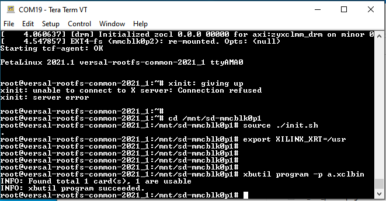
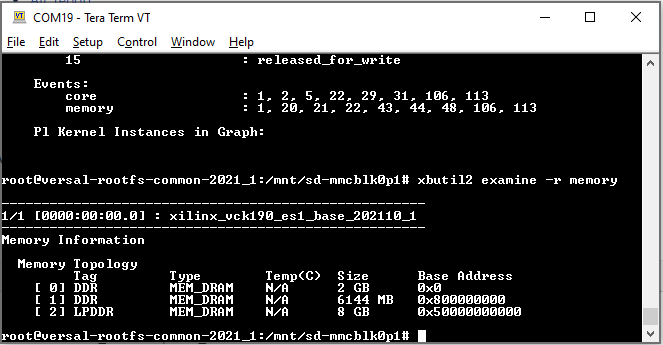
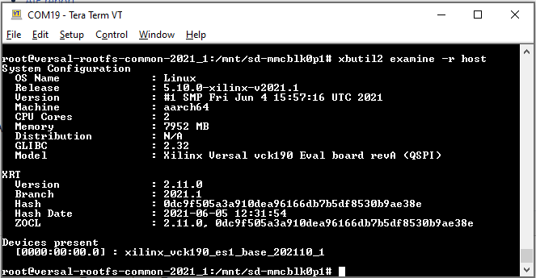
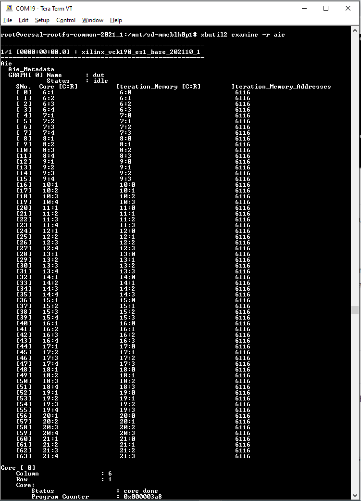
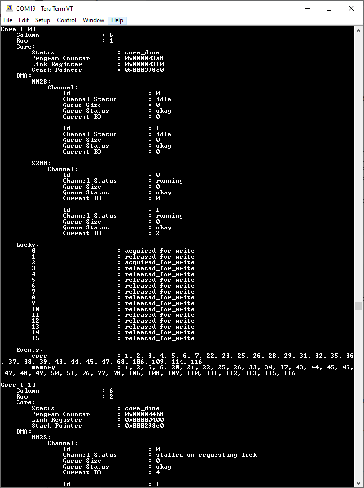
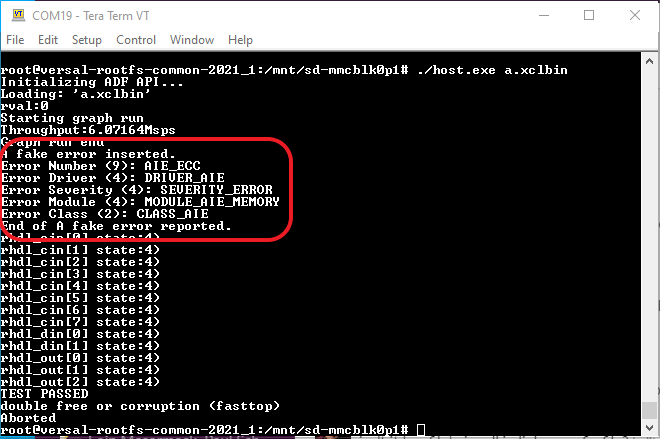
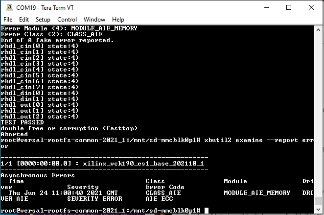

AI Engine DevelopmentSee Vitis™ Development Environment on xilinx.com See Vitis-AI™ Development Environment on xilinx.com |
AI Engine/PL Kernel Debug with XRT Utilities¶
xbutil & xbutil2¶
The two utilities, xbutil and xbutil2 are supported for PL/AI Engine kernels debug. It provides information for PL/AI Engine kernels.
To use the tools, binary container, for example, xclbin is required to be loaded first then issue commands to obtain information from, or, configure the kernels.
Command examples are as follows:
xbutil program -p a.xclbin
xbutil scan
xbutil2 examine -r aie
Step 1: Load binary container
xbutil program -p a.xclbin

Step 2: Get detailed status information for the device. Where TYPE can be aie, aieshim, all, debug-ip-status, dynamic-regions, error, host, memory, pcie-info, platform.
xbutil2 examine -r TYPE
A help string is provided by xbutil2.
root@versal-rootfs-common-2021_1:/mnt/sd-mmcblk0p1## xbutil2 examine -help
DESCRIPTION: This command will 'examine' the state of the system/device and will generate a report
of interest in a text or JSON format.
USAGE: xbutil examine [-h] [-d arg] [-r arg] [-f arg] [-o arg]
OPTIONS:
-d, --device - The Bus:Device.Function (e.g., 0000:d8:00.0) device of interest. A value of
'all' (default) indicates that every found device should be examined.
-r, --report - The type of report to be produced. Reports currently available are:
aie - AIE metadata in xclbin
aieshim - AIE shim tile status
all - All known reports are produced
debug-ip-status - Status of Debug IPs present in xclbin loaded on device
dynamic-regions - Information about the xclbin and the compute units
error - Asyncronus Error present on the device
host - Host information
memory - Memory information present on the device
pcie-info - Pcie information of the device
platform - Platforms flashed on the device
-f, --format - Report output format. Valid values are:
JSON - Latest JSON schema
JSON-2020.2 - JSON 2020.2 schema
-o, --output - Direct the output to the given file
-h, --help - Help to use this sub-command
GLOBAL OPTIONS:
--verbose - Turn on verbosity
--batch - Enable batch mode (disables escape characters)
--force - When possible, force an operation
The following images show a few examples:




Note for xbutil2 examine -r aie command
The “iteration memory address” is the core status register raw value of each tile.
Each tile’s information such as program counter values, stack pointer are provided.
MM2S and S2MM states are available.
xbutil & xbutil2 Limitations¶
Commands not applicable to the VCK190 platform:
validate: This command is for DFX base platform.
reset: Requires clearer definitions for VCK190 platforms. For example, reset command to PS/PL/AI Engine are under review.
top: A useful command, however, subcommands/options are being determined.
Utility could show false errors that are no harm to prior-loaded xclbin.
XRT Error Codes¶
Asynchronous Error¶
An error that occurs asynchronously. It may or may not be related to the XRT function call or the application which is running.
Report Mechanism with XRT APIs¶
Asynchronous errors are cached in driver subsystems and can be accessed by user application through APIs.
Asynchronous errors retrieved from the driver are encoded errors defined in xrt_error_code.h which is shared between user space and kernel space.
xrt_error_code.h
/**
* xrtErrorCode layout
*
* This layout is internal to XRT (akin to a POSIX error code),
* it is populated by driver and consumed by XRT implementation where
* it is translated into an actual error / info / warning that is propagated
* to the end user.
*
* 63 - 48 47 - 40 39 - 32 31 - 24 16 - 23 15 - 0
* --------------------------------------------------------
* | | | | | | | | | | |----| xrtErrorNum
* | | | | | | | | |----|---------- xrtErrorDriver
* | | | | | | |----|-------------------- xrtErrorSeverity
* | | | | |----|------------------------------ xrtErrorModule
* | | |----|---------------------------------------- xrtErrorClass
* |----|-------------------------------------------------- reserved
*/
typedef uint64_t xrtErrorCode;
Error Code APIs:
The API header file xrt_error.h defines the APIs for accessing current cached errors.
///// C APIs, will have simplified C++ equivalents.
/**
* xrtErrorGetLast - Get the last error code and its timestamp of a given error class.
*
* @handle: Device handle.
* @class: Error Class for the last error to get.
* @error: Returned XRT error code.
* @timestamp: The timestamp when the error generated.
*
* Return: 0 on success or appropriate XRT error code.
*/
int
xrtErrorGetLast(xclDeviceHandle handle, xrtErrorClass class, xrtErrorCode *error, uint64_t *timestamp);
/**
* xrtErrorGetString - Get the description string of a given error code.
*
* @handle: Device handle.
* @error: XRT error code.
* @out: Preallocated output buffer for the error string.
* @len: Length of output buffer.
* @out_len: Optional output of length of message.
*
* Return: 0 on success or appropriate XRT error code.
*
* Specifying out_len while passing nullptr for output buffer will return the message length,
* which can then be used to allocate the output buffer itself.
*/
int
xrtErrorGetString(xclDeviceHandle handle, xrtErrorCode error, char* out, size_t len, size_t* out_len=0);
Example using XRT APIs:
xrtGraphHandle ghdl;
ghdl = xrtGraphOpen(dhdl, top->m_header.uuid, "dut");
rval = xrtGraphRun(ghdl, 100);
if (rval != 0)
{
std::cout << "RUN error = 0x%x\n" << rval << std::endl;
}
rval = xrtGraphWait(ghdl, 0);
if (rval != 0)
{
std::cout << "WAIT error = 0x%x\n" << rval << std::endl;
if (rval == -ETIME)
{
/* wait for Graph done timeout */
xrtErrorCode errCode;
uint64_t timestamp;
rval = xrtErrorGetLast(dhdl, XRT_ERROR_CLASS_AIE, &errCode, ×tamp);
if (rval == 0)
{
size_t len;
std::vector<char> buf(256);
if (xrtErrorGetString(dhdl, errCode, buf.data(), buf.size(), &len))
{
std::cout << "xrtErrorGetString() error!" << std::endl;
} else {
std::cout << buf.data() << std::endl;
}
}
}
}
/* more code can be added here to check other error class */
Step 1: Replace host.cpp with host.cpp.error_code that is available from this tutorial.
Step 2: Compile the host.cpp code and package to sd_card.img by issuing the following commands.
cp ${PROJECT_PATH}/sw/host.cpp.error_code ${PROJECT_PATH}/sw/host.cpp
cd ${PROJECT_PATH}
make host.exe
make package
Step 3: Burn the generated sd_card.img to the SD card, insert SD card into SD card slot of the VCK190 board and power up.
Step 4: After VCK190 is powered up and booted up complete, run the binaries.
cd /mnt/sd-mmcblk0p1
source ./init.sh
export XILINX_XRT=/usr
./host.exe a.xclbin
Step 5: Expected result is as follows.

Report Mechanism with xbutil¶
Issue command xbutil2 examine --report error or/and with formatted output xbutil2 examine --report error --format JSON-2020.2 to VCK190 console to get output from console.

Synchronous Error¶
Synchronous errors are errors that can be detected during the XRT runtime function call.
Report Mechanism¶
Return system error (POSIX) code from
Kernel driver IOCTL call.
System libraries including shim level library, for example, xrt_core, AI Engine driver, FPGA manager, etc.
On error, ioctl returns -1 and errno contains the system error code.
Translate returned POSIX error code into an XRT specific error which is returned to end user.
In C++ APIs the error is propagated as an xrt::error exception embedded with a description of the error and the XRT error.
In C APIs an exception message is printed and the XRT error code is returned to end-user.
The verbosity and target (display) of error reporting are following the message infrastructure already used. For example:
rval = xclSyncBO(devHandle, boHandle, XCL_BO_SYNC_BO_TO_DEVICE, size, offset); // Syncronous error captured by xclSyncBO call
if (rval != 0) { // -EINVAL: Invalid arguments, e.g. invalid sync dir, invalid size or offset
/* code to handle xclSyncBO fail */ // -ENOENT: No such file or directory, e.g. invalid bo handle
} // -EOPNOTSUPP: Operation not supported, e.g. BO is not syncable
// -EBUSY: Device or resource busy, e.g. No available DMA channel
// -ENOMEM: Out of memory, e.g. No available free memory for sync BO
// -EIO: I/O error, e.g. DMA error
// "dmesg" or look at system log file (/var/log/syslog) might give you more information
Note: Supported error codes are listed in UG1076 Versal ACAP AI Engine Programming Environment.
License¶
Licensed under the Apache License, Version 2.0 (the “License”); you may not use this file except in compliance with the License. You may obtain a copy of the License at
http://www.apache.org/licenses/LICENSE-2.0
Unless required by applicable law or agreed to in writing, software distributed under the License is distributed on an “AS IS” BASIS, WITHOUT WARRANTIES OR CONDITIONS OF ANY KIND, either express or implied. See the License for the specific language governing permissions and limitations under the License.
XD005 | © Copyright 2021 Xilinx, Inc.